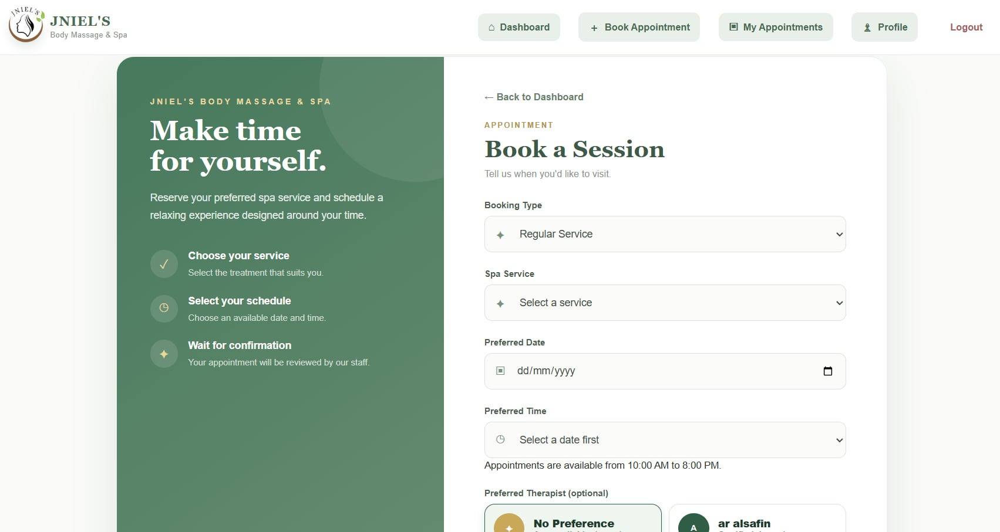
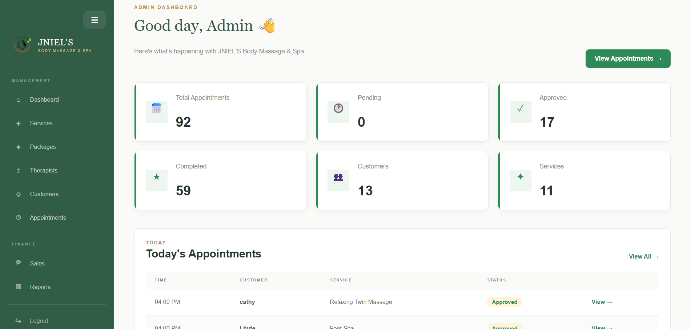
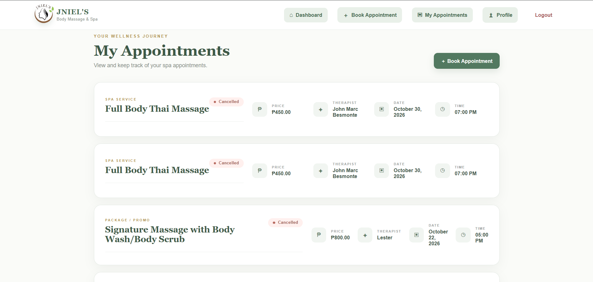
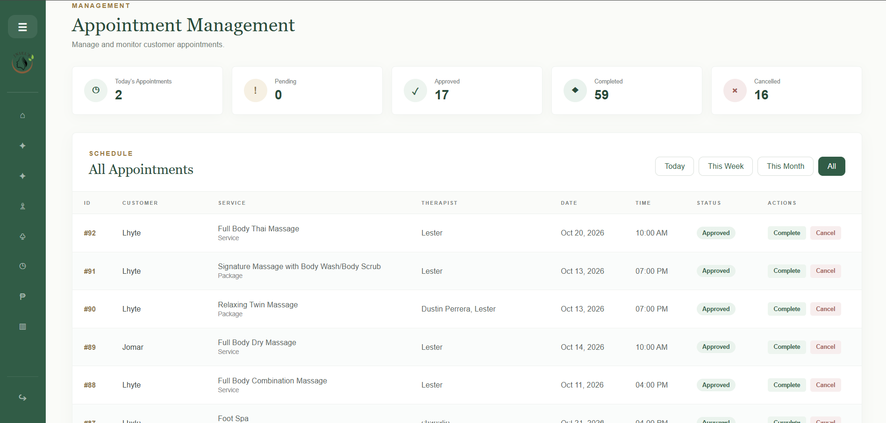
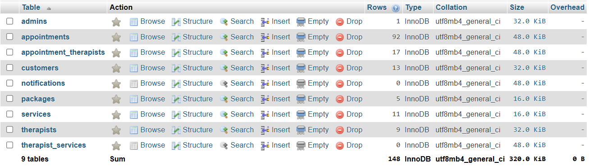
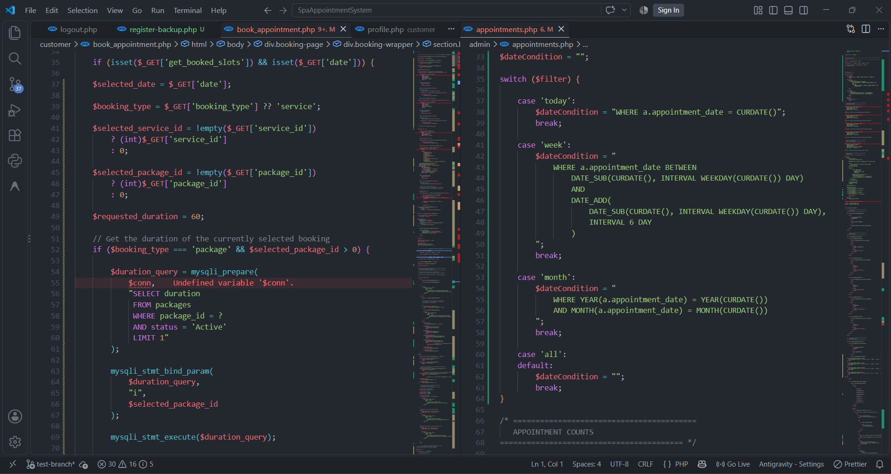

In Development
The application is being developed and refined through feature implementation, testing, debugging, and incremental improvements.
ACTIVE DEVELOPMENTPROJECT 01 / WEB APPLICATION
DEVELOPMENT CASE STUDY
A web-based appointment and management system designed to organize customer accounts, spa services, appointments, and administrative workflows.

PROJECT STATUS / DEVELOPMENT SUMMARY
PROJECT 01The application is being developed and refined through feature implementation, testing, debugging, and incremental improvements.
ACTIVE DEVELOPMENTDeveloped and tested in a local XAMPP environment.
DEVELOPMENT ROADMAP
Test regular and twin-massage bookings to confirm that the required number of therapists is assigned.
Test registration, email OTP verification, login, session handling, and relevant error cases.
Test customer booking, administrator review, database updates, and configured notifications.
The source code repository can provide further details about the application's structure, implementation, and development history.
Status and remaining priorities should be updated as features are tested and verified. Do not publish the repository link until it points to the correct project.
01 / PROJECT OVERVIEW
OVERVIEWJNIEL's Body Massage & Spa is a web application created to support customer appointments and administrative tasks. It brings multiple workflows together, including customer accounts, service information, booking, and management functions.
Developing the system has given me practical experience connecting user interfaces, PHP application logic, database operations, and authentication workflows.
02 / THE PROBLEM & OBJECTIVE
PURPOSECustomer details, services, appointment schedules, and administrative activities need to be handled consistently. A scattered workflow can make records harder to manage and appointments more difficult to coordinate.
The objective is to provide a web-based system where customers can manage their account and appointment workflow, while authorized staff can manage relevant services, therapists, and appointment records.
03 / MY CONTRIBUTION
DEVELOPMENT ROLEI worked on developing and testing the web application, including its interface, database integration, account workflows, appointment functions, and administration.
Structured customer and administrative pages using HTML, CSS, and JavaScript.
Worked with PHP and MySQL to connect application features with stored data.
Worked on customer account workflows, email OTP verification, and administrator session handling.
Investigated errors, tested booking behavior, and refined system workflows.
04 / SYSTEM FEATURES
FUNCTIONALITYThe system covers customer-facing and administrative functions. Features are still subject to testing and verification where indicated.
Customer registration, login, and account-related workflows.
ACCOUNT WORKFLOWEmail one-time password verification as part of the account workflow.
VERIFICATION IN TESTINGBooking workflows for selecting services and scheduling appointments.
BOOKING LOGIC UNDER TESTAdministrative pages for organizing the spa services offered by the business.
ADMIN WORKFLOWManagement of therapist records and appointment-related assignments.
ASSIGNMENTS UNDER TESTAdministrator login and PHP session-based access to management functions.
SESSION WORKFLOWFeature labels describe the development and testing status reflected in this project record. Confirm each workflow before presenting it as complete.
05 / TECHNOLOGY STACK
TOOLS & TECHNOLOGIESThe project uses a server-side web development approach, with PHP handling application logic and MySQL supporting relational data storage.
06 / SYSTEM ARCHITECTURE
HOW THE SYSTEM WORKSA simplified view of how users interact with the application, how PHP processes requests, and how the system accesses stored information.
Registration, login, service selection, and appointment booking.
HTML / CSS / JavaScriptDashboard, appointments, services, customers, and therapist management.
ADMIN WORKFLOWSProcesses requests, validates input, manages sessions, applies booking rules, and communicates with the database.
Stores application records such as customers, services, therapists, and appointments.
RELATIONAL DATA STORAGESupports configured email-based workflows, such as OTP verification and notifications.
SMTP / PHPMailerSIMPLIFIED ARCHITECTURE / Reflect the final diagram against the implementation and workflows actually enabled in your system.
06 / PROJECT EVIDENCE
VISUAL DOCUMENTATIONScreenshots from the actual application will document its interface, core workflows, database structure, and development process.

FIG. 01Show the actual page where customers select a service and enter appointment details.

FIG. 02Show the actual administrator interface and available management functions.

FIG. 03Show appointment schedules, records, and statuses using sample data.

FIG. 04Demonstrate the actual service records and therapist assignment screens.

FIG. 05Show selected MySQL tables and their relationships in phpMyAdmin.

FIG. 06Show a relevant PHP function, SQL query, or booking-validation logic.
PROJECT DOCUMENTATION / Replace each placeholder with an authentic screenshot from the application. Remove private and confidential information before publishing.
07 / DEVELOPMENT PROCESS
WORKFLOWIdentify the key customer, appointment, service, therapist, and administrator workflows.
Organize the pages and design the customer-facing and administration interfaces.
Connect PHP application logic to MySQL and implement the required workflows.
Test complete workflows, inspect errors, and investigate issues involving data and business rules.
Apply fixes incrementally and retest affected behavior before treating a feature as complete.
07 / TECHNICAL CHALLENGE
PROBLEM SOLVINGBOOKING LOGIC / THERAPIST ASSIGNMENT
During testing, I investigated a twin-massage booking where the service required two therapists but only one therapist appeared to be assigned. This exposed the importance of checking the booking rules across different service types.
Reproduce the issue Test the booking using the twin-massage service.
Inspect the logic Review the required therapist count and how assignments are recorded.
Retest the workflow Verify that the actual number of assigned therapists matches the service requirement.
This case documents the problem-solving process. It should not be represented as fully resolved until the twin-massage booking has been tested successfully.
09 / LESSONS LEARNED
REFLECTIONDeveloping the system helped me understand the relationship between application code, database operations, authentication, and business rules.
Understand the full workflow A page loading successfully does not prove that the complete feature works.
Check data relationships Application logic and database records must remain consistent.
Debug systematically Reproduce the problem, inspect the relevant code, change one thing at a time, and retest.
Verify before declaring success Record the actual outcome instead of assuming a fix worked.
10 / NEXT DEVELOPMENT PRIORITIES
CONTINUOUS IMPROVEMENTComplete testing for therapist requirements, including single and twin-massage bookings.
Test registration, OTP verification, login, session behavior, and error handling.
Review access control, server-side validation, database handling, and sensitive error messages.
PROJECT 01 / JNIEL'S BODY MASSAGE & SPA
This project represents my ongoing development in full-stack web development, database integration, debugging, and systematic testing.
← Back to All Projects